글로벌 수출 기업
PRP Uni는 국내를 넘어 해외 여러 국가에 수출되는 제품입니다. 글로벌 기준에 맞춘 품질 관리 시스템 아래 제조·공급됩니다.
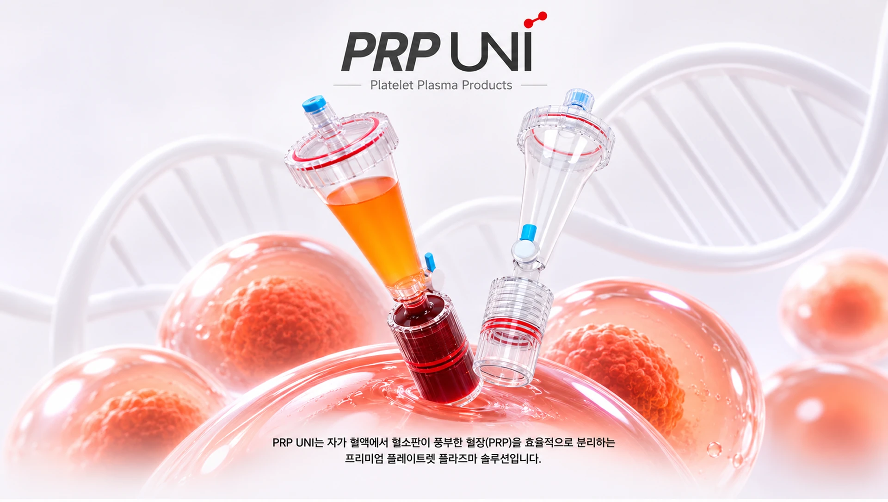
자가혈 유래 PRP의 회복력을 활용해
다양한 근골격계 질환부터 점막 재생까지, 폭넓은 치료 효과를 기대할 수 있습니다.
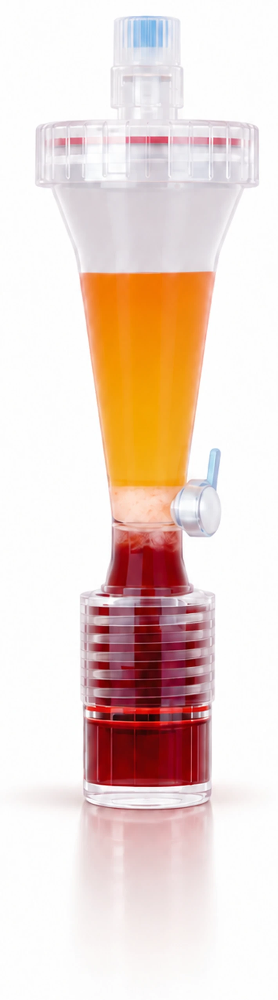
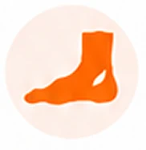
아침 첫걸음에 발뒤꿈치 통증이 반복된다면
족저근막염을 의심해 볼 수 있습니다.
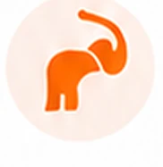
어깨를 움직일 때 통증과 힘 저하가 있다면
회전근개건병증일 수 있습니다.
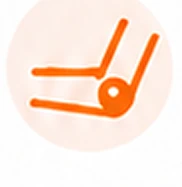
팔꿈치 바깥 안쪽 통증이 반복된다면 상과염일 수 있습니다.
PRP는 손상된 힘줄의 회복을 돕고 통증을 줄일 수 있습니다.
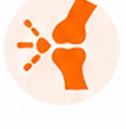
계단을 오르내릴 때 무릎 통증이 있으신가요?
PRP로 관절 내 염증을 완화하고 연골의 건강을 지켜줍니다.
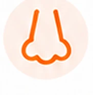
감염 후 또는 원인 미상의 후각 저하로 일상의 불편을 느끼고 계신가요?
PRP로 후각 기능 회복을 도울 수 있습니다.
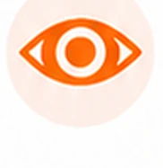
기존 치료에 반응하지 않는 난치성 안구표면 질환에 대해
자가 PRP 안약으로 안구의 염증과 통증 개선을 기대할 수 있습니다.
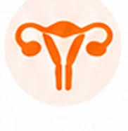
반복 착상 실패의 원인이 되는 얇은 자궁내막,
PRP로 두께와 수용성을 개선해 임신 가능성을 높일 수 있습니다.
자가혈에서 유래한 혈소판을 분리·농축하여 손상된 조직의 회복을 돕는
PRP 치료는 아래의 단계로 안전하고 체계적으로 진행됩니다.
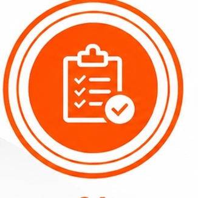
01전문의 상담과 평가를 통해
치료 적합 여부를 판단합니다.
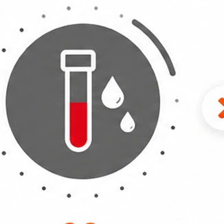
02본인의 혈액을 소량 채취합니다.
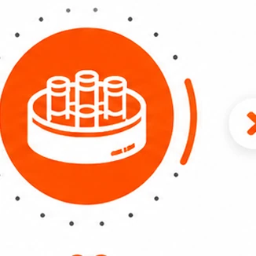
03원심분리를 통해
혈소판풍부혈장을 분리합니다.
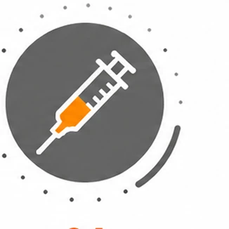
04염증 또는 손상된 부위에
정밀하게 주입합니다.
PRP Uni는 국내를 넘어 해외 여러 국가에 수출되는 제품입니다. 글로벌 기준에 맞춘 품질 관리 시스템 아래 제조·공급됩니다.
PRP Uni가 적용되는 적응증은 국가 신의료기술평가 절차를 거친 기술입니다. 자가 혈소판풍부혈장(PRP) 등 생물학적 제제를 기반으로 하는 의료기기입니다.
PRP Uni는 특허받은 기술을 바탕으로 개발된 제품입니다. 독자적인 특허 기술이 적용되어 더욱 안전하고 효과적인 결과를 제공합니다.
치료 효과는 개인에 따라 다를 수 있으며, 시술 여부는 의료기관에서 전문의와 상담 후 결정하시기 바랍니다.
궁금한 제품과 문의 내용을 남겨주시면 담당자가 안내해 드립니다.
도입 문의하기 →